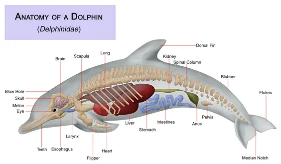

Dolphin Behvaiours
Social behaviour
Pod Living
Dolphins live in pods, tight-knit groups of 2-30 individuals. In some areas with lots of food, pods can temporarily form superpods of over 100 dolphins.
Pods provide protection, cooperative hunting, and childcare.
Social Bonds
Dolphins form long-term relationships, especially between mothers and calves, or between males who form alliances.
Social grooming is done through rubbing and swimming in synchrony.
Alliances
Some male dolphins form temporary alliances to control access to females. These alliances can last for decades and involve cooperative behavior, showing deep social intelligence.
Communication
Vocalizations
Use clicks, whistles, and burst pulses. Each dolphin has a “signature whistle” that functions like a name.
Echolocation
Clicking sounds are used for echolocation (like sonar) to navigate, hunt, and understand surroundings.
Echoes bounce back from objects, helping them judge distance, shape, and size.
Body Language
Use jumps, tail slaps, head butts, and jaw claps and bubbles to communicate emotion or warnings.
Cognitive & Play Behaviour
Playfulness
Dolphins play with other animals, such as turtles or even humans. They surf waves, play with seaweed, and chase each other for fun.
Play strengthens social bonds and helps practice hunting or social skills.
Imitation and Problem Solving
Can mimic human behavior or other dolphins, capable of abstract thinking—some trained dolphins can understand symbols, syntax, or even mirror themselves.
Tool Use
Some dolphins (like those in Shark Bay, Australia) use marine sponges on their snouts to protect themselves while foraging on sharp ocean floors.
Foraging and Hunting Behaviour
Cooperative Hunting
Herd fish into tight balls or push them toward shallow waters or nets.
In Florida and parts of Africa, dolphins work with humans to drive fish into fishermen's nets—then grab escaping fish.
Mud Ring Feeding
Dolphins create circular plumes of mud to trap fish in a ring, making them leap out of the water—right into waiting dolphin mouths.
Strand Feeding (Rare)
In some places, dolphins beach themselves briefly to snatch fish from the shore—high-risk, learned behavior.
Protective and Altruistic Behaviour
Care for the Sick/Injured
Dolphins support injured pod mates, keeping them at the surface to breathe.
Inter-Species Help
Dolphins have protected swimmers from sharks, or rescuing stranded whales or other marine mammals.
Maternal Care
Calves stay with their mothers for 3-6 years, mothers nurse, protect, and teach calves to hunt and navigate
Resting Behaviour
Unihemispheric Sleep
Dolphins sleep with one half of their brain at a time—the other half stays awake to breathe and watch for danger. They float slowly or swim in a relaxed state during rest.
Dolphin Intelligence
Self-Awareness and Consciousness
Mirror Test (Self-Recognition)
What it is: An animal is marked with a spot of paint on its body in a place it can't normally see.
When dolphins see themselves in a mirror, they turn their bodies to inspect the mark showing they understand “That's me in the mirror,” not “another dolphin.” Most animals fail this test—only a few species like humans, elephants, apes, and magpies pass it.
Click here to watch a video of them in action!
Learning, Teaching, and Memory
Observational Learning
Calves learn how to hunt, how to avoid danger, and how to use tools by watching older dolphins through guiding or demostrating.
Long-Term Memory
Dolphins remember the signature whistles (like names) of others even after 20+ years.
Example: A dolphin in captivity recognized a whistle played through a speaker from another dolphin it hadn't seen in decades.
Tool Use and Cultural Transmission
Sponge-Carrying Dolphins
In Shark Bay, Australia, dolphins have been observed putting sponges over their snouts while searching the seafloor for prey. This protects their skin from sharp coral or rocks. and is passed from mother to daughter like human culture, showing cultural learning, not just instinct.
Problem-Solving and Symbol Understanding
Complex Training Tasks
Dolphins can understand novel instructions using symbols or gestures and combine multiple commands. They can also follow grammatical order: For example, “Take the hoop to the ball” vs “Take the ball to the hoop.”
Imitation Games
Dolphins can imitate human movements even with different body shapes. They also mimic sounds and dolphin actions without direct sight—suggesting strong auditory processing and memory.
Social Intelligence and Emotion
Relationships and Alliances
Male dolphins form strategic alliances that last decades to help them access mates, involving trust, negotiation, and cooperation.
Empathy and Altruism
Helping sick pod members reach the surface.
Guarding injured dolphins from predators.
Even aiding humans and whales in trouble.
Grief and Mourning
Some dolphins carry dead calves or stay with them for hours or days—behavior similar to mourning.
Brain Structure and Size
Dolphin Brains
Very large brains relative to body size (second only to humans). The neocortex (used for problem-solving and awareness) is highly developed.
The limbic system, associated with emotion and social behavior, is also well-developed.
The folds in their cortex (gyri and sulci) are more complex than in humans—suggesting dense neural networks for complex thinking.
Playful Behvaiour
Play is seen as a sign of intelligence and boredom avoidance.
Creativity
They create new tricks and variations on learned behaviors in captivity, just to get attention or rewards.
Dolphin Adaptation
Physical Adaptations
Streamlined Body
Dolphins have a torpedo-shaped body that reduces drag and allows efficient swimming. Their smooth skin also reduces water resistance and heals quickly from scratches.
Dorsal Fin & Flippers
Their back fin helps with balance and stability. The pectoral flippers are used for steering and braking, while the tail fluke propels them forward with strong vertical strokes.
Blubber
A thick layer of fat (blubber) insulates dolphins in cold water. It also serves as an energy reserve when food is scarce.
Defense and Survival Adaptations
Speed and Agility
Their speed allows them to escape sharks and orcas.
Group Defense
Pods may surround a sick dolphin or mob a predator to protect themselves.
Camouflage (Counter-Shading)
Dolphins have dark backs and light bellies, making them hard to see from both above and below in the water.
Breathing Adaptations
Blowhole
The blowhole on top of their head allows dolphins to breathe without lifting their whole body out of the water. It has a muscular flap that seals it shut underwater to prevent drowning.
Voluntary Breathing
Unlike humans, dolphins consciously control their breathing—they don't breathe automatically. This allows them to dive without inhaling water and stay underwater for several minutes (some up to 15-20 minutes).
Sensory Adaptations
Echolocation
Dolphins emit clicks through a fatty organ in their forehead (melon).
Echoes bounce off objects and return to the dolphin's lower jaw, where vibrations are sent to the brain. Echolocation helps them "see" in the dark, murky water, track prey, and avoid obstacles.
Acute Hearing
Their hearing is extremely sharp and works well both in water and air.
They can detect high-frequency sounds beyond the range of human hearing.
Good Vision
Dolphins have excellent underwater vision, and can also see clearly in air thanks to specialized eye muscles.
They can detect motion and contrast better than fine details.
Limited Smell, Enhanced Taste
Dolphins have little to no sense of smell, but some species may taste seawater to detect chemicals from prey or other dolphins.
Feeding Adaptations
Conical Teeth
Dolphins have conical, pointed teeth suited for grabbing slippery prey, like fish and squid. They swallow prey whole—they don't chew.
Fast, Agile Swimmers
Dolphins can reach bursts of 55 km/h (34 mph) to catch prey or evade predators. Their muscles store myoglobin, allowing them to store oxygen for extended dives.
Cooperative Hunting
In some species, dolphins hunt in teams to herd fish into balls, or drive them toward shallow water. They use mud rings, wave washing, or beaching techniques to trap prey.
Thermoregulation (Temperature Control)
Counter-Current Heat Exchange
Blood vessels in the flippers and fins conserve heat by transferring warmth from arteries to nearby veins, helping to maintain core body temperature.
Sleeping Adaptations
Unihemispheric Slow-Wave Sleep
Dolphins sleep by shutting down one hemisphere of their brain at a time. This allows them to stay partially alert, continue swimming, and surface to breathe while resting.
Dolphin Biology
Teeth and Feeding Biology
Most dolphins have homodont teeth—all the same shape.
Nervous System and Brain
Brain Features
Large, complex brains with a high encephalization quotient (brain-to-body ratio).
Highly folded cerebral cortex → suggests advanced thinking.
Well-developed limbic system for emotional processing.
Intelligence
Supports self-awareness, problem-solving, memory, learning, and communication.
Sensory Biology
Hearing and Echolocation
Specialized inner ear structures tuned for underwater sound.
Use echolocation: produce clicks via the melon, receive echoes through the jawbone.
Vision
Good eyesight in air and water.
Adjusts focus via muscles in the lens and cornea.
Touch
Sensitive skin, especially on the rostrum (snout).
Use touch for bonding and communication. Nerve endings from sensitive skin can be used to feel/touch objects which is why tame dolphins like to be stroked
Their skin is also delicate and easily injured by rough surfaces, fishing nets or by being cut by a sharp fingernail. However, the healing process is quick.
Taste
Can detect salty, sour, and bitter tastes; little or no sense of smell.
Anatomy and Physical Structure
Size and Shape
Ranges from 1.5 meters (Maui's dolphin) to over 9 meters (orca).
Streamlined, torpedo-shaped bodies for efficient swimming.
Pectoral flippers: used for steering.
Dorsal fin: stabilizes the body.
Tail flukes: generate powerful thrust and also allow them to jump 15 ft in the air.
Skin and Color
Smooth, rubbery skin that shed regularly for hydrodynamic efficiency.
Typically counter-shaded: dark back, light belly for camouflage.
Skeleton
Flexible spine for vertical tail movement.
Reduced or absent hind limbs (vestigial bones remain).
No external ears; sound is received through the lower jaw.
Circulatory and Respiratory Systems
Heart and Circulation
Four-chambered heart (like all mammals).
Capable of slowing heart rate during dives (called bradycardia) to conserve oxygen.
Breathing and Blowhole
Dolphins breathe through a single blowhole on top of their head.
Voluntary breathers: must consciously come up to breathe.
Can hold breath 5-15 minutes, depending on species.
Thermoregulation
Dolphins are endothermic (warm-blooded).
Blubber helps retain heat in cold water.
Countercurrent heat exchange in fins/flippers helps maintain body temperature.
Digestive System
Dolphins have a three-chambered stomach:
Forestomach - storage.
Main stomach - digestion.
Pyloric stomach - further breakdown.
They swallow prey whole, and digestion happens internally without chewing.
Reproductive System
Sexual Maturity
Dolphins reach sexual maturity between 5-15 years, depending on species.
Mating
Mating is seasonal or year-round, depending on environment.
Males may form alliances to access females.
Gestation and Birth
Gestation lasts 10-17 months.
Usually 1 calf is born tail-first to avoid drowning.
Mothers nurse calves for 1-2 years, and stay close for several years for teaching.
Classification (Taxonomy)
Dolphins are mammals in the order Cetacea, which includes whales and porpoises.
There are 40+ dolphin species, including bottlenose dolphin (Tursiops truncatus), spinner dolphin (Stenella longirostris), orca/Killer whale (Orcinus orca) - the largest dolphin and amazon river dolphin (Inia geoffrensis)
Genetics and Evolution
Evolution from Land Mammals
Dolphins evolved from four-legged land mammals (~50 million years ago).
Ancestor: a wolf-like animal called Pakicetus.
Over time, hind limbs disappeared, nostrils moved to the top of the head, and forelimbs turned into flippers.
Vestigial Structures
Remnants of pelvic bones still exist inside dolphin bodies—evidence of land ancestry.
Minigame & Quiz
Let's have a mini quiz before commencing the minigame!
1. How do dolphins communicate?
2. What is something a dolphin can do but most animals can't?
3. Which is a dolphin adaptation?
4. How many chambers are there in a dolphin's stomach?
5. How do dolphins recognise each other?
6. Can dolphins imitate humans?
7. How many species of dolphins are there?
Status:Not submitted
Make the dolphin jump through the red hoop to gain points!
Fish may appear. Catch and eat them to gain bonus points!